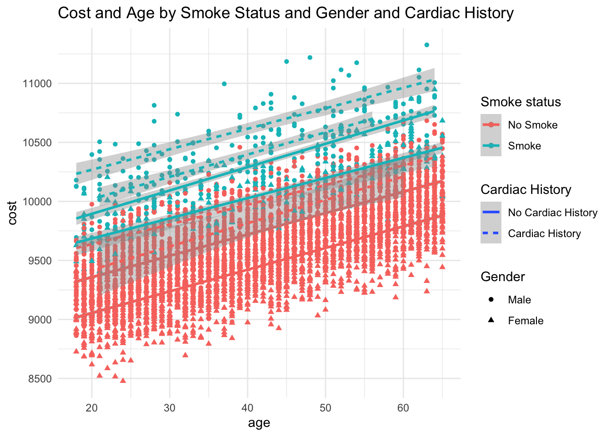

── Attaching core tidyverse packages ──────────────────────── tidyverse 2.0.0 ──
✔ dplyr 1.1.4 ✔ readr 2.1.5
✔ forcats 1.0.0 ✔ stringr 1.5.0
✔ ggplot2 3.5.1 ✔ tibble 3.2.1
✔ lubridate 1.9.3 ✔ tidyr 1.3.1
✔ purrr 1.0.2
── Conflicts ────────────────────────────────────────── tidyverse_conflicts() ──
✖ dplyr::filter() masks stats::filter()
✖ dplyr::lag() masks stats::lag()
ℹ Use the conflicted package (<http://conflicted.r-lib.org/>) to force all conflicts to become errors
library(palmerpenguins)library(arsenal)
Attaching package: 'arsenal'
The following object is masked from 'package:lubridate':
is.Date
library(dplyr)library(readr)library(table1)
Attaching package: 'table1'
The following objects are masked from 'package:base':
units, units<-
library(quarto)
Introduction
We begin with a simulated data set of 5000 observations, each assigned 5 characteristics (smoker status, sex, age, cardiac condition, and cost).
We established cost as our response / dependent variable and female, smoke, age, and cardiac as our predictor variables. Smoke, female, and cardiac are binary, while age and cost are continuous. Based on our initial look at the data, we can see that 10.2% of the observations are of non-smokers, 48.7% are female, 3.8% have a cardiac condition, and the average age is 41.5 with a standard deviation of 13.5 years and an approximately uniform distribution between ages 18-65. For costs, we can see that costs are approximately normally distributed, and the mean cost is $9,670. When cost is made into a categorical variable, we find that 3.8% of observations fall below $9,000, 76.5% between ~$9,000-$10,000, and the remaining 19.9% are above $10,000.
Using this data set, we will then use several different methods to identify the association between each of the predictor variables and costs.
#! label: load-data-and-make-table-1#! include: false# Read in simulated datacurrent_dir <-getwd()data_path <-"cohort.csv"output_path <-"output.csv"data <-read.csv(data_path)# Get information about datastr(data)
My exploration of the association between smoking, sex, age, and history of cardiac condition and costs began with getting a general understanding of the data by calculating means, medians, standard deviations, and distribution types for continous variables and the percentage of observations fitting each characteristic for categorical variables. I then looked at the proportion of each predictor variable that fell into cost categories to get a sense of potential associations. Then, I used a linear regression model with cost as a continuous outcome variable to identify the dollar increases associated with a change in each predictor variable. To better understand the odds ratios and relative impact of each, I also ran a generalized linear model (glm) using “high” and “low” cost categories divided at the median cost. We can use lm and glm methods because we can assume a linear correlation between the variables.
Results
We find that smoking, male sex, older age, and history of cardiac condition are all associated with higher costs. More specifically, using a basic linear regression model, we find that one additional year of age is associated with an $18 increase in costs, being a smoker is associated with a $593 increase in costs, being male is associated with a $294 increase in costs, and having a cardiac condition is associated with a $289 increase in costs. Accounting for interactions between the predictor variables, the increase in costs associated with smoking is just $504 while being male is associated with increasing costs by $308 and having a cardiac condition is associated with increased costs of $309. Among the predictor variables in the model, smoking status exhibited the highest odds ratio with categorical high/low cost. Between predictor variables, the greatest correlation is between smoking and cardiac history and the second is between male sex and cardiac history.
#! label: analyze_data#! include: false#Relevel datadata$cardiac <-as.factor(data$cardiac)data$cardiac <-relevel(data$cardiac, ref ="no_condition")data$sex <-as.factor(data$sex)data$sex <-relevel(data$sex, ref ="male")data$smoke <-as.factor(data$smoke)data$smoke <-relevel(data$smoke, ref ="non-smoker")#Build table demonstrating differences in predictor values by cost(Table2 <-table1(~ smoke + sex + age + cardiac | cost_cat, data=data))
A: $8000-$8999 (N=181)
B: $9000-$9999 (N=3825)
C: >$10,000 (N=994)
Overall (N=5000)
smoke
non-smoker
181 (100%)
3692 (96.5%)
619 (62.3%)
4492 (89.8%)
smoker
0 (0%)
133 (3.5%)
375 (37.7%)
508 (10.2%)
sex
male
11 (6.1%)
1790 (46.8%)
764 (76.9%)
2565 (51.3%)
female
170 (93.9%)
2035 (53.2%)
230 (23.1%)
2435 (48.7%)
age
Mean (SD)
25.4 (5.62)
39.5 (12.7)
52.1 (10.9)
41.5 (13.5)
Median [Min, Max]
24.0 [18.0, 44.0]
39.0 [18.0, 65.0]
55.0 [18.0, 65.0]
41.0 [18.0, 65.0]
cardiac
no_condition
181 (100%)
3757 (98.2%)
872 (87.7%)
4810 (96.2%)
cardiac_condition
0 (0%)
68 (1.8%)
122 (12.3%)
190 (3.8%)
#Build linear regression model to determine variable relationships with cost as continuous outcome(model1 <-lm(cost ~ age + smoke + sex + cardiac, data = data))
Call:
lm(formula = cost ~ age + smoke + sex + cardiac, data = data)
Coefficients:
(Intercept) age smokesmoker
8988.80 18.21 592.76
sexfemale cardiaccardiac_condition
-293.65 289.22
(model1_interaction <-lm(cost ~ age * smoke * sex * cardiac, data = data))
#Build a figure with all variables(Figure1 <-ggplot(data, aes(x = age, y = cost, color = smoke, shape = sex,linetype = cardiac)) +geom_point() +geom_smooth(method ="lm") +labs(title ="Cost and Age by Smoke Status and Gender and Cardiac History",color ="Smoke status",shape ="Gender", linetype ="Cardiac History" ) +scale_color_discrete(labels =c("No Smoke", "Smoke")) +scale_shape_discrete(labels =c("Male", "Female")) +scale_linetype_discrete(labels =c("No Cardiac History", "Cardiac History")) +theme_minimal())
`geom_smooth()` using formula = 'y ~ x'

#Analyze with cost as binary outcome (above/below median) to calculate odds ratiosdata$cost_highlow <-0data$cost_highlow <-ifelse(data$cost >median(data$cost), 1, 0)(model2 <-glm(cost_highlow ~ sex + age + smoke + cardiac, data = data, family =binomial(link ="logit")))
Call: glm(formula = cost_highlow ~ sex + age + smoke + cardiac, family = binomial(link = "logit"),
data = data)
Coefficients:
(Intercept) sexfemale age
-5.8680 -2.6189 0.1605
smokesmoker cardiaccardiac_condition
5.6186 2.7987
Degrees of Freedom: 4999 Total (i.e. Null); 4995 Residual
Null Deviance: 6931
Residual Deviance: 3514 AIC: 3524
coef_summary <-summary(model2)$coefficients# Calculate odds ratios and their confidence intervalsodds_ratios <-exp(coef_summary[, "Estimate"])ci_lower <-exp(coef_summary[, "Estimate"] -1.96* coef_summary[, "Std. Error"])ci_upper <-exp(coef_summary[, "Estimate"] +1.96* coef_summary[, "Std. Error"])# Combine results into a data frameodds_ratios_df <-data.frame(OddsRatio = odds_ratios,LowerCI = ci_lower,UpperCI = ci_upper,Predictor =rownames(coef_summary))# Plot odds ratios and confidence intervals(Figure2 <-ggplot(odds_ratios_df, aes(x = OddsRatio, y = Predictor)) +geom_point() +geom_errorbarh(aes(xmin = LowerCI, xmax = UpperCI), height =0) +geom_vline(xintercept =1, linetype ="dashed") +labs(x ="Odds Ratio", y ="Predictor", title ="Odds Ratios and 95% Confidence Intervals") +theme_bw())